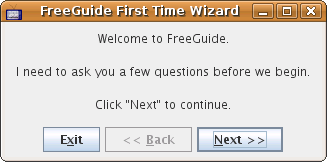
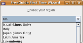
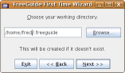
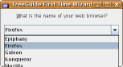
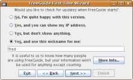
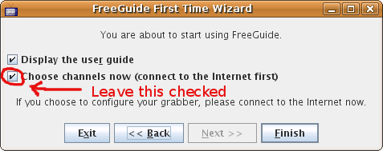
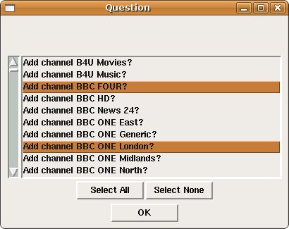
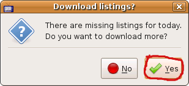
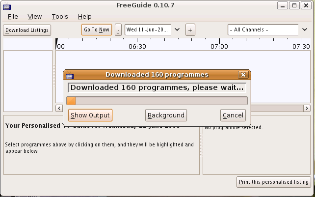
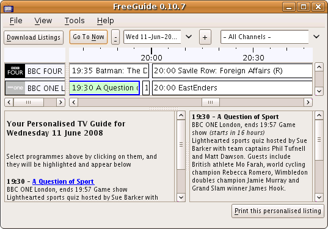

| FreeGuide | UserGuide »
Running For The First Time |
|
|
User Guide | The Main Screen > Running FreeGuide for the first timeIf you followed the installation instructions for your platform, but you get an error message when you run FreeGuide, please Contact Us and we'll try to help. The first time you run FreeGuide it asks you some questions: 
   
... and then asks whether you want to choose your channels. You should normally leave this option ticked: 
and then answer various questions, and choose the channels you want: 
Note: if you get an empty window with just an OK button, click OK and it will carry on.
If all has gone well, FreeGuide will know what channels you want, but won't be able to show any programmes because you haven't downloaded them yet. It will ask you whether you want to go to the download screen. Connect to the Internet, and click Yes: 
Cross your fingers and wait. If all is well, the listings should eventually download (it can take some time): 
... and you can start using FreeGuide: 
If you have problems have a look at the FAQ, and Contact Us if that doesn't help. Note: If you very quickly get an "Execution Error" message, check that you're connected to the Internet and try again. If you wait quite a while and then get the "Execution Error" message, everything may still be alright - click "Continue" to see.
|
| If you would like to help improve this site, please Contact Us and we will give you the password to edit pages. | |
| Page last modified on June 10, 2008 PmWiki Info | - - - () - |